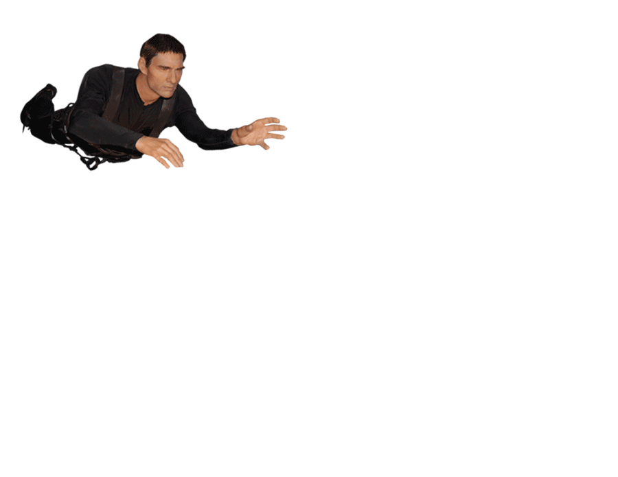
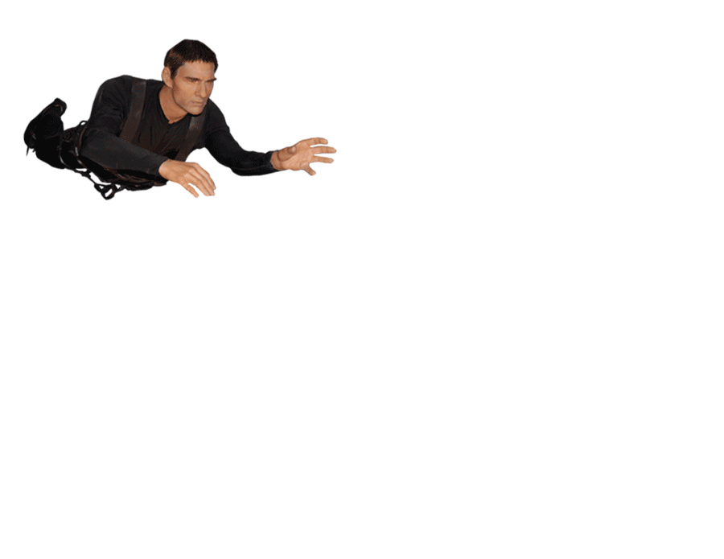

With its Mount Rushmore of Hollywood icon busts, the Hollywood Wax Museum capitalizes on people’s infatuation with celebrities.


Actors and actresses’ faces are familiar to us, and they bring back memories of when we’ve seen them in films.

We naturally want to see people we already know. The ability to point at someone and say “Hey! I know them!“ is already fulfilling in and of itself.
 
